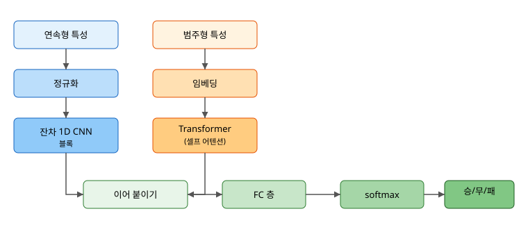
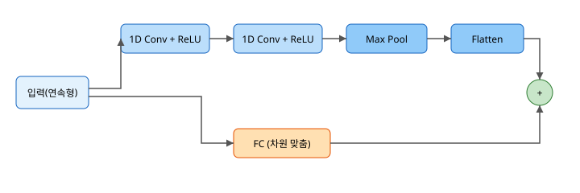

축구예측
Table of Contents
1. 1. 배경: 이 논문이 풀려는 문제
1.1. 1.1 스포츠 결과 예측이 어려운 이유
축구 경기 결과는 정해진 공식이 없다. 같은 두 팀이 붙어도 그날의 컨디션, 날씨, 심리 상태에 따라 결과가 달라진다. 변수는 많고 서로 얽혀 있다. 그래서 “강한 팀이 항상 이긴다”는 단순한 규칙으로는 잘 맞지 않는다.
이 논문은 이 어려운 문제를 데이터로 푼다. 경기 전에 알 수 있는 정보들 (팀 전력, 과거 성적, 배당률 등)을 모아서, 그 경기의 결과가 홈팀 기준으로 승(Win) / 무(Draw) / 패(Defeat) 중 무엇일지 예측한다.
1.2. 1.2 전통적 방법의 한계
예전에는 통계 모델을 많이 썼다. 대표적으로 Elo 평점은 경기 결과로 팀 점수를 올리고 내리며 다음 경기를 예측한다. 포아송 회귀는 득점 수를 확률로 모델링한다. 이런 방법은 해석이 쉽다는 장점이 있다.
하지만 한계가 있다. 변수들 사이의 복잡한 상호작용을 잘 못 잡는다. 예를 들어 “원정인데 비가 오고 핵심 수비수가 빠진” 상황처럼 여러 조건이 겹쳤을 때의 효과를 단순 통계 모델은 표현하기 어렵다.
1.3. 1.3 머신러닝·딥러닝으로의 전환
머신러닝은 데이터에서 규칙을 스스로 찾는다. 결정 트리나 부스팅 같은 방법이 먼저 쓰였다. 이들은 표 형태(tabular) 데이터에 강하지만, 데이터의 순차적 성질이나 깊은 상호작용을 잡는 데는 약하다.
그래서 딥러닝이 등장한다. 특히 Transformer는 자연어 처리에서 큰 성공을 거뒀고, 이 논문은 그 아이디어를 축구 데이터에 가져온다.
1.4. 1.4 논문의 핵심 아이디어
이 논문의 모델은 두 가지를 결합한다.
- 1D CNN: 연속형 숫자 특성(득점, 점유율 등)에서 가까이 있는 값들의 국소 패턴을 잡는다.
- Transformer: 범주형 특성(리그 등)을 임베딩으로 바꾼 뒤, 서로 멀리 떨어진 특성들 사이의 관계까지 잡는다.
두 흐름의 결과를 합쳐 최종적으로 승/무/패를 예측한다.
1.5. 1.5 논문의 기여 한 줄 정리
연속형은 1D CNN으로, 범주형은 임베딩+Transformer로 따로 처리한 뒤 합치는 하이브리드 구조가, 전통 머신러닝과 단독 딥러닝보다 축구 결과를 더 잘 맞혔다는 것이 이 논문의 핵심 결과다.
2. 2. 기본 개념
2.1. 2.1 승/무/패 3-클래스 분류 문제
예측 대상이 세 가지 중 하나인 문제를 3-클래스 분류라고 한다. 모델은 각 경기에 대해 세 숫자를 내놓는다. 예를 들어 (승 0.6, 무 0.25, 패 0.15) 처럼 합이 1인 확률을 출력하고, 가장 큰 쪽을 예측으로 고른다.
이 확률을 만드는 함수가 softmax다. 점수 \( z_1, z_2, z_3 \)을 확률로 바꾼다.
\[ \text{softmax}(z_i) = \frac{e^{z_i}}{\sum_{j} e^{z_j}} \]
지수 함수를 쓰는 이유는 두 가지다. 첫째, 모든 값을 양수로 만든다. 둘째, 큰 점수는 더 크게 키워 차이를 또렷하게 만든다.
2.2. 2.2 연속형 특성과 범주형 특성의 차이
특성은 크게 두 종류다.
- 연속형(continuous): 숫자에 크기 의미가 있는 값. 득점 수, 점유율, 배당률 등. 더하고 빼는 게 의미가 있다.
- 범주형(categorical): 종류를 나타내는 값. 리그 이름, 팀 이름 등. “프리미어리그 1, 분데스리가 2”처럼 번호를 붙여도 그 숫자의 크기에는 의미가 없다.
이 둘을 같은 방식으로 다루면 안 된다. 논문이 두 경로로 나눈 이유가 여기에 있다.
2.3. 2.3 범주형을 임베딩으로 바꾸는 이유
리그를 그냥 1, 2, 3 숫자로 넣으면 모델은 “3번 리그가 1번 리그의 3배” 라고 오해할 수 있다. 그렇다고 원-핫으로 펼치면 종류가 많을 때 0이 가득한 희소한(sparse) 벡터가 된다.
임베딩은 각 범주를 학습 가능한 짧은 실수 벡터로 바꾼다. 예를 들어 리그를 8차원 벡터로 표현하고, 그 값을 훈련하면서 조정한다. 비슷한 성격의 리그는 비슷한 벡터를 갖게 되어 의미 관계가 자연스럽게 담긴다.
2.4. 2.4 셀프 어텐션의 직관
셀프 어텐션은 “지금 보는 특성이 다른 어떤 특성과 관련이 깊은가”를 스스로 계산한다. 각 특성마다 질문(Query), 열쇠(Key), 값(Value) 세 벡터를 만들고, 질문과 열쇠가 잘 맞는 특성의 값을 더 많이 가져온다.
비유하면 도서관에서 검색어(Query)를 넣고, 각 책의 색인(Key)과 비교해 관련 높은 책의 내용(Value)을 더 많이 읽는 것과 같다.
2.5. 2.5 평가지표
정확도만으로는 부족하다. 클래스가 불균형하면 다수 클래스만 찍어도 정확도가 높게 나오기 때문이다. 그래서 논문은 여러 지표를 함께 본다.
- 정확도(ACC): 맞힌 비율.
- Weighted F1: 클래스별 정밀도와 재현율의 조화평균을, 클래스 크기로 가중 평균한 값.
- MCC: 네 칸(TP, TN, FP, FN)을 모두 반영해 불균형에 강한 지표.
3. 3. 알고리즘 설명 (논문 모델 중심)
3.1. 3.1 전체 구조 한눈에 보기
논문 모델은 입력을 두 갈래로 나눈다. 연속형은 1D CNN으로, 범주형은 임베딩 후 Transformer로 보낸다. 두 결과를 이어 붙이고(concat), 완전연결층 (FC)을 거쳐 softmax로 승/무/패 확률을 낸다.

3.2. 3.2 범주형 경로: 컬럼 임베딩 층
범주형 특성 \( c_i \)는 정해진 후보값 집합 \( V_i \) 중 하나를 갖는다. 각 범주형 특성마다 임베딩 행렬 \( E_i \in \mathbb{R}^{|V_i| \times d} \)를 둔다. 여기서 \( |V_i| \)는 후보값 개수, \( d \)는 임베딩 차원이다. 이 행렬은 학습되는 값이라 훈련하면서 점점 좋아진다.
쉽게 말해, 각 범주는 표에서 자기 줄(행)을 찾아 \( d \)차원 벡터로 바뀐다. 리그가 11개면 \( 11 \times d \) 크기의 표에서 해당 리그 줄을 꺼내는 것이다.
3.3. 3.3 Transformer: 셀프 어텐션 수식
핵심은 어텐션 한 줄이다. 입력에서 질문 \( Q \), 열쇠 \( K \), 값 \( V \) 행렬을 만들고 다음을 계산한다.
\[ \text{Attention}(Q,K,V) = \text{softmax}\!\left(\frac{QK^{T}}{\sqrt{d_k}}\right)V \]
\( QK^{T} \)는 질문과 열쇠의 유사도다. \( \sqrt{d_k} \)로 나누는 이유는 차원이 커질수록 값이 너무 커져서 softmax가 한쪽으로 쏠리는 것을 막기 위해서다. softmax로 가중치를 만든 뒤 값 \( V \)를 그 비율로 섞는다.
여러 관점에서 동시에 보기 위해 어텐션을 여러 개(head) 둔다. 이를 멀티헤드 어텐션이라 한다.
\[ \text{MultiHead}(Q,K,V) = \text{Concat}(\text{head}_1, \dots, \text{head}_h)\,W^{O} \]
각 head가 독립적으로 어텐션을 계산하고, 결과를 이어 붙인 뒤 가중치 \( W^{O} \)로 한 번 더 변환한다.
3.4. 3.4 연속형 경로: 잔차 1D CNN 블록
1D 합성곱은 이웃한 값들을 묶어 가중합한다.
\[ y_i = \sum_{j=0}^{k-1} w_j \, x_{i+j} \]
\( x \)는 입력, \( w \)는 학습되는 필터, \( k \)는 필터 크기다. 필터가 한 칸씩 미끄러지며 국소 패턴을 읽는다. 예를 들어 “최근 득점과 점유율이 함께 높다” 같은 이웃한 특성의 조합을 잡는다.
논문은 여기에 잔차 연결(residual)을 더한다. 입력을 두 갈래로 보내, 한쪽은 합성곱 두 번 + LeakyReLU + 배치 정규화 + 풀링을 거치고, 다른 한쪽은 FC 층으로 차원만 맞춘다. 그리고 둘을 더한다.

잔차 연결의 장점은 정보가 깊은 층을 지나도 사라지지 않게 지름길을 열어 주는 것이다. 이는 층이 깊어질 때 생기는 기울기 소실 문제를 줄인다.
3.5. 3.5 두 경로 합치기 → FC → softmax
연속형 경로의 출력과 범주형 경로의 출력을 이어 붙인다. 그 벡터를 FC 층으로 줄이고 softmax로 세 확률을 만든다. 학습은 정답과 예측의 차이를 재는 교차 엔트로피 손실을 줄이는 방향으로 진행한다.
3.6. 3.6 모델 선택 근거
논문은 단독 CNN, RNN, 전통 머신러닝도 먼저 시험했다고 밝힌다. 결과는 하이브리드가 가장 좋았다. 이유는 분업이다. CNN은 가까운 특성의 국소 패턴에 강하고, Transformer는 멀리 떨어진 특성 간 관계에 강하다. 둘을 합치니 낮은 수준과 높은 수준의 상호작용을 모두 잡을 수 있었다.
4. 4. 간단 예제
각 구성 요소를 작은 코드로 따로 본다. 모두 keras로 작성한다.
4.1. 4.1 임베딩 층 예제
import numpy as np
import tensorflow as tf
from tensorflow import keras
# 리그가 11종이라고 가정. 각 리그를 8차원 벡터로 임베딩한다.
embedding = keras.layers.Embedding(input_dim=11, output_dim=8)
# 경기 4개의 리그 번호 (0~10 사이 정수)
league_ids = np.array([0, 3, 7, 10])
vectors = embedding(league_ids)
print(vectors.shape) # (4, 8): 경기 4개 각각 8차원 벡터
(4, 8)
실행 단계는 이렇다. 먼저 Embedding 층을 만든다. 입력 단계에서 정수
리그 번호를 넣는다. 출력 단계에서 각 번호가 8차원 벡터로 바뀐다.
주요 인자를 보면, input_dim 은 범주의 개수(여기서는 리그 11종),
output_dim 은 임베딩 벡터의 차원이다. 이 층의 특징은 표에서 해당
줄을 꺼내는 단순 동작이지만, 그 표 값이 훈련으로 학습된다는 점이다.
4.2. 4.2 멀티헤드 어텐션 블록 예제
# 토큰 6개, 각 토큰 16차원이라고 가정한 입력
x = tf.random.normal((1, 6, 16)) # (배치, 토큰 수, 차원)
attn = keras.layers.MultiHeadAttention(num_heads=2, key_dim=16)
out = attn(x, x) # 셀프 어텐션: query와 value가 같은 x
print(out.shape) # (1, 6, 16): 모양은 그대로, 내용은 섞임
(1, 6, 16)
실행 단계는 이렇다. 입력을 (배치, 토큰 수, 차원) 모양으로 준비한다.
MultiHeadAttention 을 만들고, 같은 입력을 query와 value로 넣어 셀프
어텐션을 한다. 출력 모양은 입력과 같지만, 각 토큰이 다른 토큰의 정보를
섞어 받은 상태가 된다.
주요 인자는 num_heads (관점의 수)와 key_dim (각 head에서 쓰는
열쇠 벡터 차원)이다. 특징은 한 번에 여러 관점으로 관계를 본다는 점이다.
4.3. 4.3 잔차 1D CNN 블록 예제
def residual_cnn_block(input_dim):
inputs = keras.Input(shape=(input_dim,))
x = keras.layers.Reshape((input_dim, 1))(inputs) # 1D 신호 모양으로
# 메인 경로: 합성곱 두 번
x = keras.layers.Conv1D(32, 3, padding='same')(x)
x = keras.layers.LeakyReLU()(x)
x = keras.layers.BatchNormalization()(x)
x = keras.layers.Conv1D(32, 3, padding='same')(x)
x = keras.layers.LeakyReLU()(x)
x = keras.layers.MaxPooling1D(2)(x)
main = keras.layers.Flatten()(x)
# 잔차 경로: 차원만 맞춰서 더하기
res = keras.layers.Dense(main.shape[-1])(inputs)
out = keras.layers.Add()([main, res])
return keras.Model(inputs, out)
block = residual_cnn_block(18)
block.summary()
실행 단계는 이렇다. 입력을 받아 Reshape 로 1D 신호 모양으로 바꾼다.
메인 경로에서 합성곱을 두 번 통과시키며 국소 패턴을 뽑는다. 잔차
경로에서는 Dense 로 차원만 맞춘다. 마지막에 Add 로 두 경로를 더한다.
주요 함수를 보면, Conv1D(필터 수, 필터 크기) 는 이웃 값을 묶어 읽는다.
BatchNormalization 은 값의 분포를 안정시켜 학습을 빠르게 한다.
MaxPooling1D 는 길이를 줄여 계산을 가볍게 한다.
4.4. 4.4 하이브리드 모델 조립 예제
def build_hybrid(n_cont, n_league, emb_dim=8):
# 연속형 입력 -> 잔차 1D CNN
cont_in = keras.Input(shape=(n_cont,), name='continuous')
c = keras.layers.Reshape((n_cont, 1))(cont_in)
c = keras.layers.Conv1D(32, 3, padding='same', activation='relu')(c)
c = keras.layers.MaxPooling1D(2)(c)
c = keras.layers.Flatten()(c)
c_res = keras.layers.Dense(c.shape[-1])(cont_in)
cont_out = keras.layers.Add()([c, c_res])
# 범주형(리그) 입력 -> 임베딩 -> 셀프 어텐션
cat_in = keras.Input(shape=(1,), name='league')
e = keras.layers.Embedding(n_league, emb_dim)(cat_in) # (배치,1,emb)
e = keras.layers.MultiHeadAttention(num_heads=2, key_dim=emb_dim)(e, e)
cat_out = keras.layers.Flatten()(e)
# 두 경로 합치기 -> FC -> softmax
x = keras.layers.Concatenate()([cont_out, cat_out])
x = keras.layers.Dense(64, activation='relu')(x)
out = keras.layers.Dense(3, activation='softmax')(x)
return keras.Model([cont_in, cat_in], out)
model = build_hybrid(n_cont=18, n_league=11)
model.summary()
실행 단계는 이렇다. 연속형과 범주형을 각각 다른 Input 으로 받는다.
연속형은 1D CNN 경로로, 범주형은 임베딩과 어텐션 경로로 보낸다.
Concatenate 로 두 결과를 합치고, Dense 와 softmax로 세 확률을 낸다.
이 구조가 논문 Fig.2를 학생 수준으로 단순화한 형태다.
5. 5. 고찰: 장단점과 개선 방향
5.1. 5.1 하이브리드 모델의 장점
가장 큰 장점은 분업이다. 연속형과 범주형을 성격에 맞게 따로 처리한다. 1D CNN은 이웃 특성의 국소 패턴을, Transformer는 멀리 떨어진 특성 간 관계를 잡는다. 잔차 연결 덕분에 층을 깊게 쌓아도 정보가 잘 흐른다.
5.2. 5.2 단점과 비용
단점도 분명하다. 첫째, 계산량이 많다. Transformer와 CNN을 같이 쓰니 학습에 자원이 많이 든다. 둘째, 데이터가 많이 필요하다. 딥러닝은 표본이 적으면 과대적합되기 쉽다. 셋째, 해석이 어렵다. 왜 그렇게 예측했는지 사람이 알아보기 힘들다.
5.3. 5.3 베이스라인 대비 의미
논문은 단독 CNN, RNN, 전통 머신러닝과 비교했고 하이브리드가 더 나았다. 하지만 스포츠 예측은 본질적으로 어렵다. 어떤 모델도 정확도가 아주 높지는 않다. 그래서 단순한 기준선(다수 클래스 찍기, 배당률만 쓰기)과 비교해 “정말 의미 있는 향상인지” 확인하는 태도가 중요하다.
5.4. 5.4 개선 방향
논문은 후속 방향을 제시한다. 표형 데이터 전용 모델인 TabNet, TabPFN을 써 보거나, 사전학습된 표현을 활용하거나, 경기 보고서 같은 텍스트 데이터를 함께 쓰는 멀티모달 확장이 그것이다. 또한 계산 비용을 줄이는 경량화도 실무에서는 중요한 과제다.
6. 6. 실무 데이터 고찰: 데이터 정리와 관찰
6.1. 6.1 데이터셋 구조
논문은 캐글의 European Soccer Database를 쓴다. 11개 유럽 국가, 2008~2016 시즌, 경기 2만 5천 건 이상, 선수 1만 명 이상을 담는다. 데이터는 크게 네 종류다.
- 경기 데이터: 결과, 팀 구성, 라인업, 골·파울·점유율 등 경기 중 사건.
- 선수·팀 능력치: EA Sports FIFA 시리즈에서 가져온 선수 기량, 팀 전력.
- 배당률: 최대 10개 업체의 배당률. 시장의 기대치를 보여 준다.
- 이벤트 데이터: 골 종류, 코너, 크로스, 파울 등 세부 사건.
6.2. 6.2 레이블 만들기
각 경기를 홈팀 기준으로 라벨링한다. 홈팀 골이 더 많으면 Win, 같으면 Draw, 적으면 Defeat다. 즉 정답은 홈팀 골과 원정팀 골만 있으면 정해진다. 주의할 점은, 정답을 만든 골 수 자체를 입력 특성으로 쓰면 안 된다는 것이다. 그건 답을 그대로 알려주는 셈이라 데이터 누수가 된다.
6.3. 6.3 필드 선정 ① FIFA 평점
팀 전력을 수치로 나타내려고 FIFA의 선수 종합 평점(overall rating)을 쓴다. 핵심은 시점이다. 각 선수의 평점 중 “경기 날짜 이전의 가장 가까운” 값을 고른다.
\[ \text{rating}(p_i) = \max\big(\text{overall\_rating}(p_i, d)\big), \quad d < D \]
여기서 \( D \)는 경기 날짜, \( d \)는 그 이전 시점이다. 이렇게 하는 이유는 미래 정보가 새는 것을 막기 위해서다. 경기 이후에 갱신된 평점을 쓰면 결과를 알고 예측하는 반칙이 된다. 이 필드는 “이 팀이 얼마나 센 선수들로 구성됐는가”를 알려 주므로 선정됐다.
6.4. 6.4 필드 선정 ② 팀 과거 성적
일정 기간의 득점 수, 실점 수, 승리 수를 모은다. 그리고 골득실(득점 - 실점)도 본다. 득점은 공격력을, 실점은 수비력을 보여 준다. 골득실은 둘을 합쳐 팀의 전체 강함을 한 숫자로 요약한다. 과거의 흐름이 다음 경기로 이어지는 경향이 있어 이 필드들이 선정됐다.
6.5. 6.5 필드 선정 ③ 상대 전적
같은 두 팀의 과거 맞대결 기록을 본다. 전체 전력으로는 설명이 안 되는 “천적 관계” 같은 맞대결 특유의 성질을 담기 위해서다.
6.6. 6.6 필드 선정 ④ 배당률
배당률은 수많은 사람의 베팅이 모여 만들어진 시장의 집단 예측이다. 그 자체로 매우 강한 신호다. 전문가와 대중의 판단이 압축돼 있기 때문에, 배당률만 써도 꽤 잘 맞는다. 그래서 빠질 수 없는 필드다.
6.7. 6.7 필드 선정 ⑤ 리그 식별자
리그는 범주형 특성이다. 리그마다 경기 성향(득점이 많은 리그, 수비적인 리그)이 달라서 예측에 도움이 된다. 숫자 크기에 의미가 없으니 임베딩으로 바꿔서 모델에 넣는다.
6.8. 6.8 결측치 처리
논문은 값이 빠진 행을 평균이나 중앙값으로 채우지 않고 그냥 제거한다. 인위적으로 채운 값이 분포를 왜곡해 모델 해석을 흐릴 수 있기 때문이다. 대신 데이터가 충분히 많아서 행을 지워도 학습에 무리가 없다.
6.9. 6.9 데이터 관찰: KDE 분포 보기
논문은 연속형 특성의 분포를 승/무/패 그룹별로 겹쳐 그린다(KDE). 어떤 특성이 결과를 잘 가르는지 눈으로 확인하는 단계다. 세 곡선이 많이 겹치면 그 특성은 결과를 잘 못 가르고, 곡선이 서로 떨어져 있으면 잘 가른다.
import pandas as pd
import matplotlib.pyplot as plt
df = pd.read_csv('data/data.csv')
# 배당률(B365H, 홈 승리 배당)을 결과별로 분포 비교
for label in ['Win', 'Draw', 'Defeat']:
subset = df[df['label'] == label]['B365H']
subset.plot(kind='kde', label=label)
plt.xlabel('홈 승리 배당률 (B365H)')
plt.ylabel('밀도')
plt.legend()
plt.title('결과별 배당률 분포')
plt.show()
실행 단계는 이렇다. 데이터를 불러온다. 승/무/패 각각의 배당률을 골라
kde 분포로 그린다. 곡선이 갈라지는 정도로 그 특성의 예측력을 가늠한다.
배당률은 보통 세 곡선이 잘 갈라져서 강한 특성임을 눈으로 알 수 있다.
6.10. 6.10 클래스 불균형 관찰
전체 21,374경기의 결과 분포를 보면 한쪽으로 치우쳐 있다. 홈 승리가 가장 많다. 홈 어드밴티지 때문이다.
불균형이 있으므로 정확도만 보면 안 되고 Weighted F1, MCC를 함께 봐야 한다는 6.5절(2장)의 이유가 여기서 분명해진다.
7. 7. 실무 데이터 적용
여기서는 우리가 만든 단순 버전 데이터(배당률 + 리그)로 전 과정을 돌린다. 논문의 FIFA 평점·과거 성적·상대 전적은 6장에서 설명한 방식으로 같은 파이프라인에 더 넣으면 된다.
7.1. 7.1 시간 순서 분할
스포츠 데이터는 시간 순서가 있다. 미래로 과거를 예측하면 안 되므로, 섞지 않고 앞에서부터 훈련/검증/테스트로 나눈다. 논문도 같은 원칙으로 2009~2013을 훈련(13,155), 2014를 검증(2,887), 2015를 테스트(3,052)로 나눴다.
7.2. 7.2 전처리 파이프라인
import numpy as np
import pandas as pd
from sklearn.preprocessing import LabelEncoder, StandardScaler
df = pd.read_csv('data/data.csv')
# 연속형(배당률)과 범주형(리그)을 나눈다
odds_cols = [c for c in df.columns if c[:3] in ('B36','BWH','BWD','BWA','IWH',
'IWD','IWA','WHH','WHD','WHA','VCH','VCD','VCA')]
league_cols = [c for c in df.columns if c.startswith('League_')]
X_cont = df[odds_cols].astype('float32').values
X_league = df[league_cols].values.argmax(axis=1) # 원-핫 -> 정수 인덱스
y = LabelEncoder().fit_transform(df['label'])
print('연속형 특성 수:', X_cont.shape[1], '| 리그 종류:', X_league.max()+1)
실행 단계는 이렇다. 데이터를 불러온다. 배당률 열은 연속형으로, League_*
열은 원-핫이므로 argmax 로 다시 정수 리그 번호로 바꾼다. 정답은
LabelEncoder 로 0/1/2로 인코딩한다. 이렇게 연속형과 범주형을 따로
준비해야 하이브리드 모델의 두 입력에 맞출 수 있다.
7.3. 7.3 모델 학습
# 시간 순서대로 분할 (섞지 않음)
n = len(df); te = int(n*0.69); ve = te + int(n*0.15)
# 연속형은 훈련 세트로만 표준화 학습
scaler = StandardScaler().fit(X_cont[:te])
Xc_tr, Xc_va, Xc_te = (scaler.transform(X_cont[:te]),
scaler.transform(X_cont[te:ve]),
scaler.transform(X_cont[ve:]))
Xl_tr, Xl_va, Xl_te = X_league[:te], X_league[te:ve], X_league[ve:]
y_tr, y_va, y_te = y[:te], y[te:ve], y[ve:]
model = build_hybrid(n_cont=Xc_tr.shape[1], n_league=X_league.max()+1)
model.compile(optimizer='adam',
loss='sparse_categorical_crossentropy',
metrics=['accuracy'])
history = model.fit(
{'continuous': Xc_tr, 'league': Xl_tr}, y_tr,
validation_data=({'continuous': Xc_va, 'league': Xl_va}, y_va),
epochs=30, batch_size=64,
callbacks=[keras.callbacks.EarlyStopping(patience=5,
restore_best_weights=True)],
verbose=1)
실행 단계는 이렇다. 시간 순서로 데이터를 나눈다. 표준화는 훈련 세트로만
fit 한 뒤 나머지에 transform 한다(누수 방지). 하이브리드 모델을 만들고
compile 로 학습 방법을 정한다. fit 에서 두 입력을 딕셔너리로 함께
넣어 학습한다. EarlyStopping 은 검증 점수가 더 안 좋아지면 멈춘다.
주요 인자를 보면, loss='sparse_categorical_crossentropy' 는 정답이
정수일 때 쓰는 다중 분류 손실이다. batch_size 는 한 번에 보는 경기 수,
epochs 는 전체 데이터를 몇 번 반복할지다.
7.4. 7.4 평가와 베이스라인 비교
from sklearn.metrics import f1_score, matthews_corrcoef
y_pred = np.argmax(
model.predict({'continuous': Xc_te, 'league': Xl_te}, verbose=0), axis=1)
# 기준선: 무조건 다수 클래스로 찍기
majority = np.bincount(y_tr).argmax()
base_acc = (y_te == majority).mean()
acc = (y_te == y_pred).mean()
print(f'기준선(다수 클래스) 정확도 : {base_acc:.4f}')
print(f'하이브리드 정확도 : {acc:.4f}')
print(f'Weighted F1 : {f1_score(y_te, y_pred, average="weighted"):.4f}')
print(f'MCC : {matthews_corrcoef(y_te, y_pred):.4f}')
실행 단계는 이렇다. 테스트 세트로 예측한다. 다수 클래스만 찍는 기준선과 비교한다. 정확도뿐 아니라 Weighted F1과 MCC도 함께 출력한다. 모델이 기준선을 의미 있게 넘는지가 핵심이다.
7.5. 7.5 결과 해석·한계·마무리
축구 결과 예측은 어렵다. 좋은 모델도 정확도가 아주 높지는 않다. 그래도 이 강의에서 배운 핵심은 분명하다.
첫째, 데이터의 성격에 맞춰 처리한다. 연속형은 CNN, 범주형은 임베딩과 어텐션으로 나눈다. 둘째, 누수를 막는다. 경기 직전 정보만 쓰고, 시간 순서로 나누고, 표준화는 훈련 세트로만 학습한다. 셋째, 지표를 제대로 고른다. 불균형 데이터에서는 정확도만 보지 않고 Weighted F1, MCC를 본다.
이 세 가지는 축구뿐 아니라 모든 표형 데이터 예측에 그대로 적용되는 원칙이다.